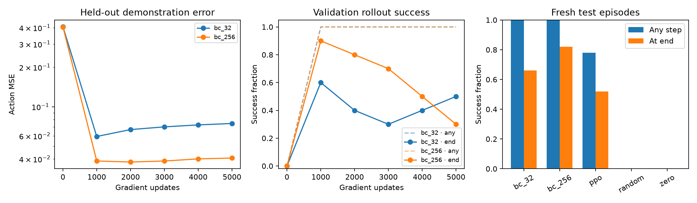

PHYSICAL AI FOUNDATIONS · WEEK 4 · BEHAVIOR CLONINGLearning from demonstrations.
Testing complete behavior.
Two imitation policies, one fixed PPO baseline, and 50 fresh test seeds. Same PushCube task, state observations, action interface and episode horizon.
Reaching the goal is only part of the task.
| Policy | Reached goal | Final success | Mean return |
|---|
| BC · 32 demos | 50/50 · 100% | 33/50 · 66% | 34.079 |
| BC · 256 demos | 50/50 · 100% | 41/50 · 82% | 37.097 |
| PPO · unchanged | 39/50 · 78% | 26/50 · 52% | 23.869 |
| Random | 0/50 · 0% | 0/50 · 0% | 2.827 |
| Zero actions | 0/50 · 0% | 0/50 · 0% | 3.926 |
BC receives official external expert demonstrations. This comparison does not match the cost of obtaining that expert to PPO's training budget. One trained model per condition; 100% on 50 episodes does not establish perfect generalization.
Action prediction versus rollout performance

The larger clone's training MSE decreased between updates 1,000 and 5,000, while validation final success fell from 90% to 30%. Checkpoints were selected on validation, before final testing. Both selected models came from update 1,000.
Where the larger clone still failed
All 50 episodes reached the goal at some point. Nine finished outside the goal's xy radius. The 95% episode-sampling interval for final success is 69.2%–90.2%; it does not include variability across training seeds.
392 of 512 official GPU demonstrations replayed successfully in CPU physics. Whole-episode splits, train-only normalization and matching controller limits keep the learning comparison explicit.
Same starting seed. Different learned behavior.
The first three fresh test seeds for both policies, including final-state failures. Native simulator video at 20 control steps per second; use the controls to play or scrub.
BC · 256 demos · seed 20000
Reached during episode; failed final criteria.
PPO · unchanged · seed 20000
Successful at final step.
BC · 256 demos · seed 20001
Successful at final step.
PPO · unchanged · seed 20001
Reached during episode; failed final criteria.
BC · 256 demos · seed 20002
Successful at final step.
PPO · unchanged · seed 20002
Successful at final step.